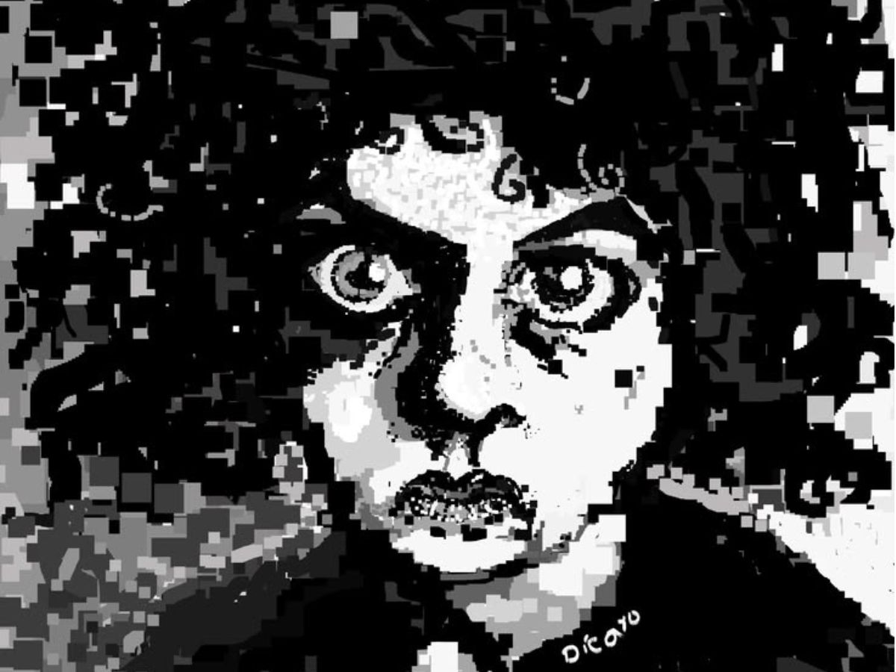
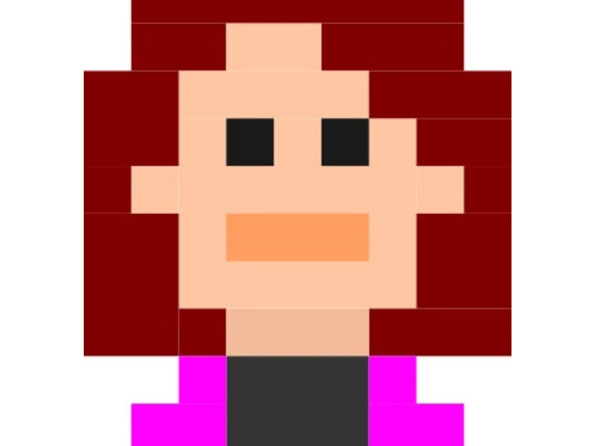
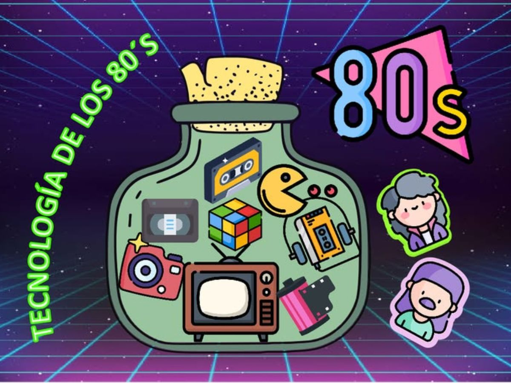

CARGANDO CONTENIDO...
Mi universo ilustrado
Aquí encontrarás una selección de mis ilustraciones. Sin comisiones abiertas porque no tengo tiempo para encargos, solo para lidiar con el genio de Flora, Cósima, Petra y Akira
Esta es mi galería

